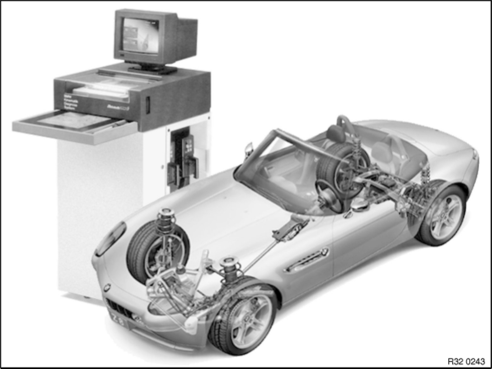

Table of Contents
32 01 99 (503)
Kinematic Diagnosis System and environment
BMW KDS (Beissbarth)

Table of contents
1. - Foreword 1. Foreword
1.1 - Objectives
1.2 - Further development of the BMW Kinematic Diagnosis System
1.3 - Technical data
1.4 - Scope of delivery
1.5 - Accessories required
1.6 - Accessories recommended
2. - Measuring options using the BMW Kinematic Diagnosis System 2. Measuring Options Using the BMW Kinematic Diagnosis System
2.1 - Front axle
2.2 - Rear axle
2.3 - Other measuring options
3. - System description 3. System Description
3.1 - BMW Kinematic Diagnosis System 1, based on the Beissbarth ML4000
3.2 - Computer
3.3 - Graphical tablet
3.4 - Equipment cabinet
3.5 - Remote display
3.6 - Measuring sensors with CCD camera
3.7 - BMW Quick-acting clamp
3.8 - Rotating / sliding plates
3.9 - Sensor pins
3.10 - Spoiler adapter
3.11 - Quick-clamping units
3.12 - Retainers
4. - Workstation 4. Workstation
4.1 - Environment
4.2 - Preconditions for alignment
4.3 - Measuring tolerance
4.4 - Levelling the measuring station
5. - Chassis-related terms 5. Chassis-Related Terms
5.1 - Toe-differential angle
5.2 - Camber
5.3 - Toe-in
5.4 - Castor
5.5 - Geometrical drive axis / symmetrical axis
5.6 - Wheel displacement angle
5.7 - Kingpin offset
6. - Wheel suspension 6. Wheel Suspension
6.1 - Rigid axle suspension
6.2 - Independent wheel suspension
7. - Wheel alignment / procedure 7. Wheel Alignment / Procedure
7.1 - Measuring options
7.2 - Preparatory work
7.3 - Initial / final measurement
7.4 - Printing out the data
8. - Special features 8. Special Features
8.1 - Free wheel alignment
8.2 - System settings
9. - BMW Kinematic Diagnosis System comparison (Bosch - Beissbarth) 9. BMW Kinematic Diagnosis System Comparison (Bosch - Beissbarth)
10. - Control modification (menu) 10. Control Modification (Menu)
10.1 - Remote control with display
10.2 - Brief operating instructions
10.3 - Display support
11. - Updating the software / setpoint data 11. Updating the Software / Setpoint Data
11.1 - Requirements
11.2 - Procedure (Beissbarth)
11.3 - Procedure (Bosch)
12. - Creating, copying and editing setpoint data 12. Creating, Copying and Editing Setpoint Data
12.1 - Copying
12.2 - Creating
12.3 - Editing
13. - Special functions 13. Special Functions
13.1 - Customer-specific printer report header
13.2 - Adjusting options
13.3 - Rotating plate test
13.4 - Viewing and deleting customer entries from database
14. - Modifications within program 14. Modifications within Program
15. - Faults 15. Faults
15.1 - Tyre faults
15.2 - Front axle faults
15.3 - Rear axle faults
Further details on the "Kinematic Diagnosis System" can be found in the operating instructions for the BMW KDS (Beissbarth / Bosch).
Functional and system descriptions are not subject to change. Parts availability and immediate ordering availability cannot be derived from this information. The specialist departments will be providing further details at the relevant time.